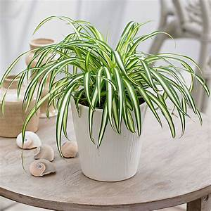
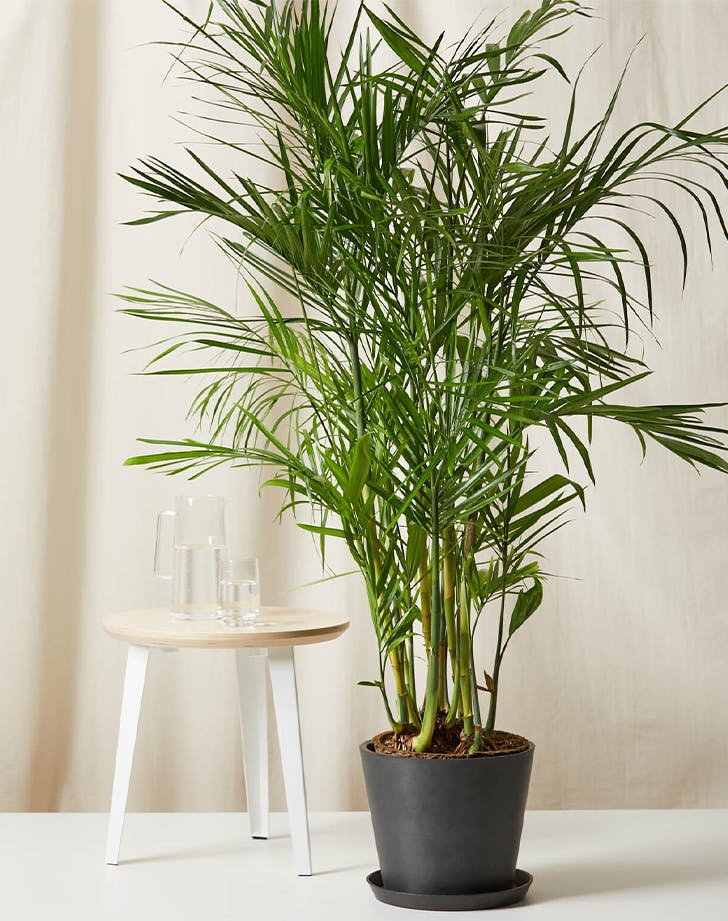

Spider plants
These easy to grow houseplants look especially nice in a hanging basket and were a favorite in Victorian-era households. Spider plants like bright to moderate indirect sunlight. Spider plants do not appreciate direct, hot sunlight, which can burn their leaves, causing brown tips and spots. In the spring and summer months, keep the soil moist to encourage growth. Do not let soil dry out too much.
Pothos
Basic pothos care is very easy. These plants enjoy a wide range of environments. They do well in bright indirect light as well as low light and can be grown in dry soil or in vases of water. They will thrive in nutrient rich soil, but do almost as well in nutrient poor soil. They can be grown in water alone or in soil. So, a pothos plant started in soil has a hard time thriving if moved to water, and a pothos cutting started in water will not do very well in soil, especially if it has spent a long period of time growing in water. While pothos plants are an easy to care for houseplant, you do need to be aware that they are poisonous.
Snake plant
Similar to other household succulents, snake plants help to filter indoor air. What’s unique about this particular plant is that it’s one of the few plants that can convert carbon dioxide (CO2) into oxygen at night. The snake plant could be described as the perfect house plant – it always looks fresh but is incredibly low maintenance. It needs hardly any care and can survive a long period of neglect. It isn’t fussy about its location and needs little watering. It’s a great plant for beginners as it’s virtually indestructible.
.jpg)
Peacock plant
The overarching Calathea genus is sometimes referred to as peacock plants, but it's the Makoyana that is officially. They grow in partial Sun and full shade they do not like direct sun so under artiffical light you can control how much light to put on the plant. Getting the balance right when it comes to irrigation is key for peacock plants. If the leaves are starting to curl up this can be a sign of underwatering. Too much water can cause root rot. These plants like consistent and even levels of moisture and many enthusiasts use a moisture meter to help them gauge when the plant needs watering.
Peperomia
More than 1,000 types of Peperomias exis. My favorite is the begonia watermelon. When growing a Peperomia, locate the plant in a medium to low light situation away from direct sun. When I first had this plant it died due to over watering and not enough light I live in a very dark house so now it is growing in water from one of the falling leaves it is under one led light and is growing well personally I think they grow better just in water.
Boston fern
Fern species that can grow as tall as 7 feet in its native habitat they look great in a hanging basket and very low mainenance. They like to be kept in warm, humid conditions and don't like air from windows or heating.During the winter when the plant isn't growing, you can reduce watering, but your fern should never be allowed to completely dry out.The Boston fern needs bright indirect light when grown indoors and outdoors shaded area.
Bamboo palm
Bamboo is usually a low-maintenance, hardy plant. It rarely has issues with pests or diseases, and it typically doesn’t require pruning. You can remove old canes at their base if they begin to look unsightly. Make sure to plant your bamboo palm in well-drained soils. While these plants like to remain consistently moist, they don't tolerate standing water; 1-3 waterings a week should do the trick. Likes full and partial sun otherwise it won't grow properly within enough sun light.
